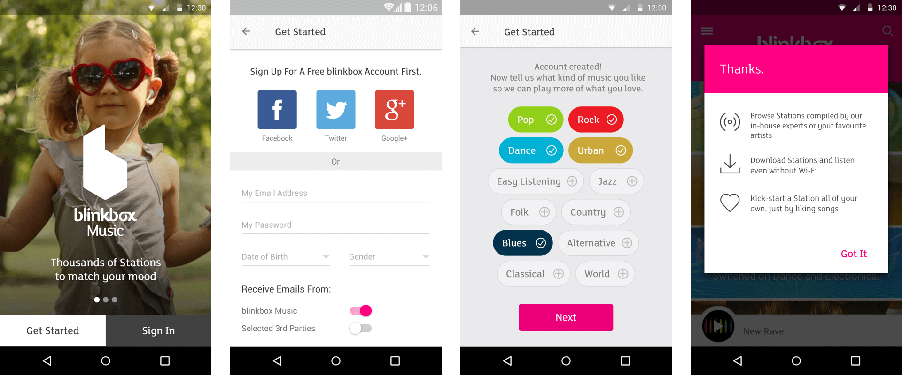
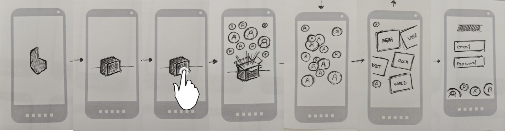
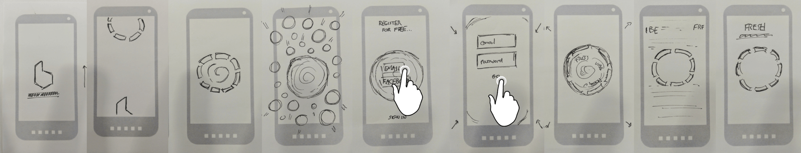
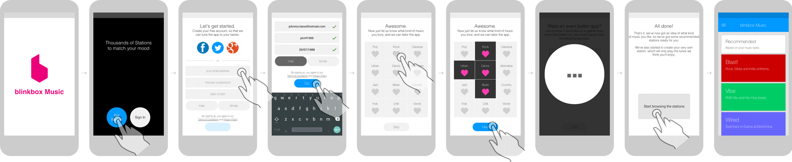

The Blinkbox Music onboarding experience was designed to both educate new users about the app and allow them to quickly begin to personalise the content. The focus for this project was to reduce churn, having identified a pattern that new users who did not initially engaged with the content were most likely not to return.
Brainstorm sketches showing how a fun, interactive onboarding experience may engage users. Many of these ideas were sketched up and discussed. We often made use of the POP app to quickly turn paper sketches into tap through prototypes.
Axure wireframes were drafted for the final set of ideas. Interactive prototypes, again created in Axure, were then used for in-house research and to start refining the experience. These were key to ensuring that the journey was kept short enough to retain the user's attention while still fulfilling its purpose.
